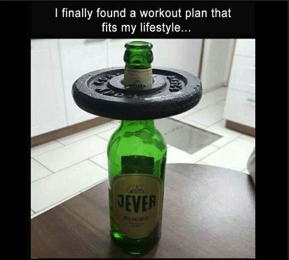

About
What is going on here?
We “chartered” under the following shared goals. And because its not official until you have a mission statement.
Commitment
- Casual, (1/hr a week)
- Open-source
- Side project
Growth
- Cloud software development and site reliability in a devops era.
- Collaborative portfolio that can be showcased in an interview setting. BOOM TEAMWORK!
- Enrich industry profiles (github presense, technical content publishing).
- See “Code of Conduct” below.
Contribute
- Give back to the open source community
How do you work?
- The Github suite and Slack work well at this scale.
- Chat over email, native workflow tools (issue comment, etc) over direct messaging.
Is this effort about beer?
- No, we just like it.
What is up with the lifter thing?
- Like lifting your drink to toast good fortune.
- Or this: 
Code of Conduct/Culture
- Diversity (especially of opinion)
- Respect
- Knowledge Sharing
- Peer Mentorship
- Keep any employment-related stuff away from this.
Legal Stuff
Licensing
- All intellectual property generated by this team for this team’s purposes is licensed under a Creative Commons Attribution 4.0 International License.

- Where feasible and compatible with any existing ancestor software licensing, we prefer and apply the MIT Software license.
Product User Data Privacy
- It is your data, not ours. We will only access your stored data on our servers for support purposes or to comply with law enforcement.
- Signing up for our products can require an email and password. It is only for identity and access, and for us to occasionally send product notifications. We will never sell your contact information to a 3rd party.
- We may use a external payments processer (“Stripe”) for subscription products. We will never hold your credit card information on our servers.
- Changes to this policy could occasionally happen, we will notify you of the changes.
- Data is encypted in transit via TLS, and encapsulated in strong encryption at rest where approriate. We use Amazon Web Services for hosting.
Product Acceptable Use
- placeholder